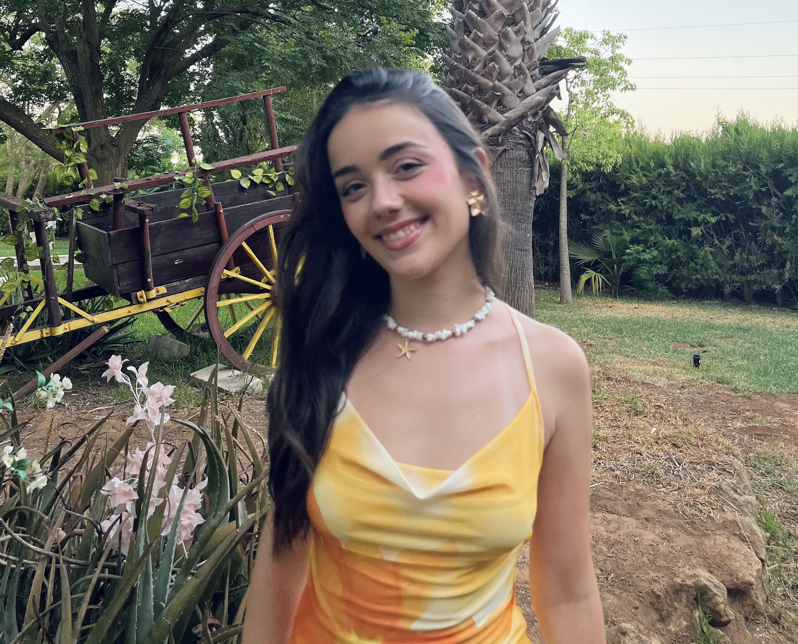

Hola, soy Marisa.
Diseñadora gráfica y desarrolladora web UX/UI. Me formé en el Máster de la Cámara de Comercio de Sevilla, donde trabajé con clientes reales y aprendí que el buen diseño no es solo estética — es escucha, estrategia y ejecución. Me muevo con soltura entre Figma y el código, entre una identidad de marca y una interfaz digital. Cada proyecto empieza con preguntas y termina con algo que funciona, que se sostiene y que tiene personalidad propia. Cuando diseño, pienso en quién lo va a usar, en qué tiene que transmitir y en cómo puede durar.
© Marisa B.